expressionHeatmap()
Adrià Mitjavila Ventura
06 agosto, 2021
Source:vignettes/09-expressionHeatmap.Rmd
09-expressionHeatmap.Rmd
Run expressionHeatmap()
expressionHeatmap() takes a data frame with expression data for many genes and samples and draws a ggplot2-based heatmap. It also allows to cluster both rows (genes) and columns (samples), as well as scaling (scale()) by rows and columns (or both).
Required input
As input, expressionHeatmap() takes a data frame with expression data for many genes and samples. The first column -named Geneid- must have the gene names and the other columns must have numerical values with the expression data (e.g. TPM values) for each gene and sample.
# read the peak annotation into a list
tpm <- read.delim("../testdata/tpm.tsv")
mean_tpm <- tibble(Geneid = tpm$Geneid,
Cond1 = rowMeans(tpm[2:3]),
Cond2 = rowMeans(tpm[4:5]),
Cond3 = rowMeans(tpm[6:7]))
mean_tpm[1:4,]## # A tibble: 4 × 4
## Geneid Cond1 Cond2 Cond3
## <chr> <dbl> <dbl> <dbl>
## 1 DDX11L1 0 0 0
## 2 WASH7P 6.84 3.26 3.02
## 3 MIR6859-1 39.9 1.47 1.69
## 4 MIR1302-2HG 0.106 0 0Default run
To select the genes, the names written in the genes arguments must be present in the Geneid column of the input data.
expressionHeatmap(mean_tpm, genes = c("TP53", "JUN", "ATF2", "YAP1"))## Using Geneid as id variablesClustering
Setting the arguments clust_rows and clust_cols to TRUE, hierarchical clustering can be performed on both, rows and columns.
expressionHeatmap(mean_tpm, genes = c("TP53", "JUN", "ATF2", "YAP1"),
clust_rows = T, clust_cols = T)## Using Geneid as id variables
Other methods
By default, the distance calculation method is euclidean and the clustering is ward.D: hclust(dist(data, method = "euclidean"), method = "ward.D"). If another method has to be used, the dist_method and hclust_method arguments should be set to the corresponding value, passed through the functions dist() and hclust(), respectively.
Available values for dist_method can be found in the dist() function documentation and available values for hclust_method can be found in the hclust() function documnetation.
expressionHeatmap(mean_tpm, genes = c("TP53", "JUN", "ATF2", "YAP1"),
clust_rows = T, clust_cols = T,
dist_method = "manhattan", hclust_method = "median")## Using Geneid as id variablesShow dendograms
expressionHeatmap() allows to plot the dendograms for the rows and the columns by setting the arguments show_dend_rows and show_dend_cols to TRUE, respectively.
The dendograms are drawn with the function plotDendogram(), which takes the output of the hclust() function inside expressionHeatmap() as input. Then, using the pathcwork package, the dendograms are attached to the main heatmap. Note that if the row dendogram is plotted (show_dend_rows = T), the Y axis is moved to the right.
expressionHeatmap(mean_tpm, genes = c("TP53", "JUN", "ATF2", "YAP1"),
clust_rows = T, clust_cols = T,
show_dend_rows = T, show_dend_cols = T)## Using Geneid as id variables## Loading required package: ggdendro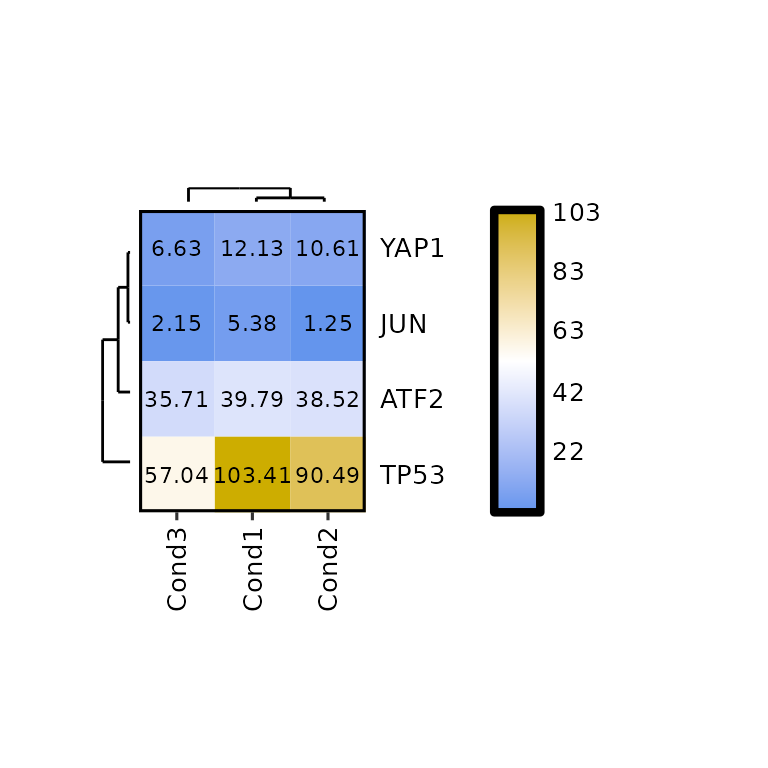
The size of the dendograms can be changed by setting their proportion to the height of the heatmap -for the column dendogram- or to its width -for the row dendogram-. To do so, the arguments dend_rows_prop and dend_cols_prop must be set to a value between 0 and 1.
expressionHeatmap(mean_tpm, genes = c("TP53", "JUN", "ATF2", "YAP1"),
clust_rows = T, clust_cols = T,
show_dend_rows = T, show_dend_cols = T,
dend_rows_prop = 0.5, dend_cols_prop = 0.5)## Using Geneid as id variables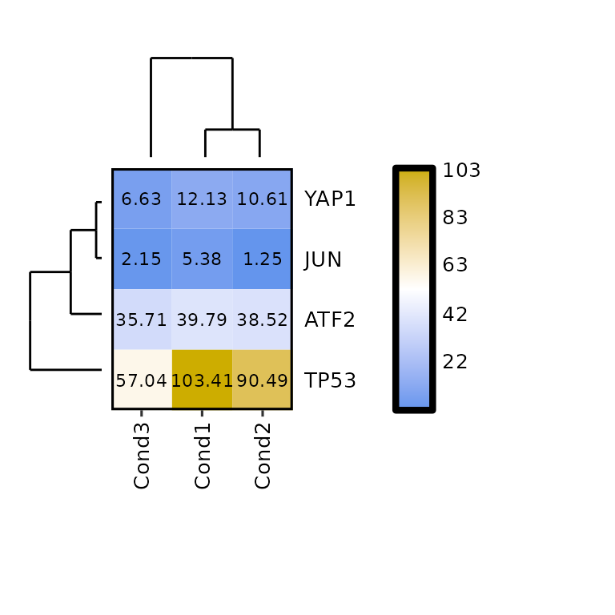
Scaling
expressionHeatmap() allows the scaling of the data by rows and columns by calling the function scale(). To do so, the scale argument must be set to either "rows" -to scale by rows- or "cols" -to scale by columns-. It can also be both c("rows", "cols").
expressionHeatmap(mean_tpm, genes = c("TP53", "JUN", "ATF2", "YAP1"), scale = "rows")## Using Geneid as id variables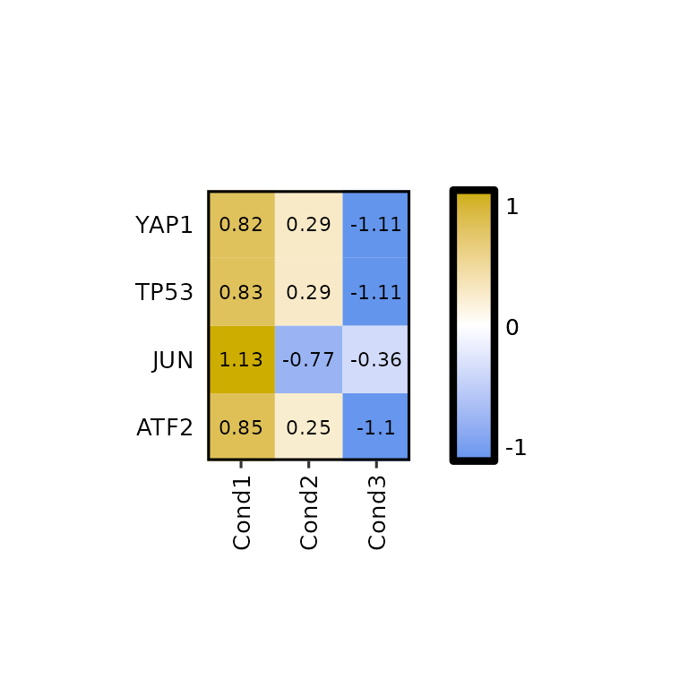
expressionHeatmap(mean_tpm, genes = c("TP53", "JUN", "ATF2", "YAP1"), scale = "cols")## Using Geneid as id variables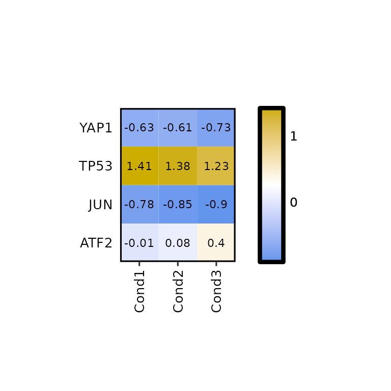
Legend scale
To change the legend scale, the arguments legend_scale, legend_breaks_num, legend_breaks_by and legend_midpoint can be used.
By default, legend_scale is set to NULL, which takes the lowest and highest values in the input data and uses them as lower limit and higher limit of the scale. In this case, the legend midpoint is set to half the way between the lower and higher limits.
expressionHeatmap(mean_tpm, genes = c("TP53", "JUN", "ATF2", "YAP1"),
legend_scale = NULL)## Using Geneid as id variables
Even if legend_scale = NULL, using the argument legend_breaks_num we can put as many breaks as we want.
expressionHeatmap(mean_tpm, genes = c("TP53", "JUN", "ATF2", "YAP1"),
legend_scale = NULL, legend_breaks_num = 7)## Using Geneid as id variables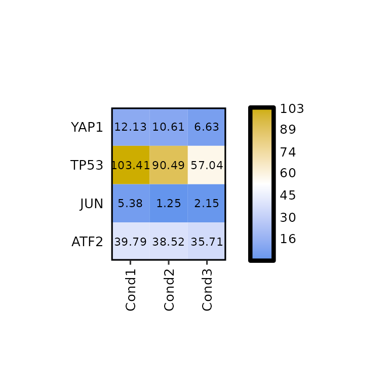
To set a custom scale, the legend_scale argument must be set to a numerical vector of length 2 (e.g. c(0,200)). In such case, the argument legend_breaks_by will be used instead of legend_breaks_num to define the distance between the breaks in the legend and the legend_midpoint argument will be set to the midpoint of the legend (passed through scale_fill_gradient(midpoint = legend_midpoint)).
By default, these values are set to legend_breaks_by = .5 and legend_midpoint = 0, but it is recommended to change them.
expressionHeatmap(mean_tpm, genes = c("TP53", "JUN", "ATF2", "YAP1"),
legend_scale = c(0, 200), legend_breaks_by = 50, legend_midpoint = 100)## Using Geneid as id variables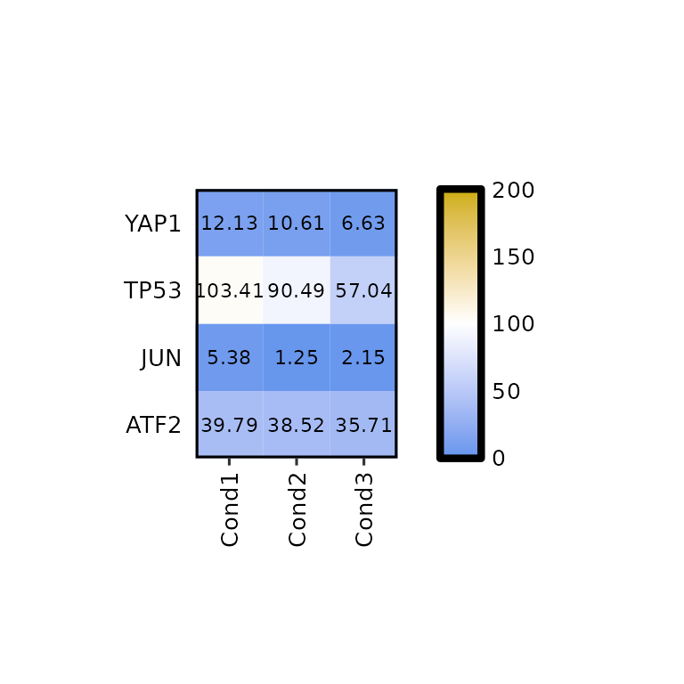
The legend_midpoint argument will affect the color scale of our heatmap, since the middle color will be set to the value we pass through this argument.
expressionHeatmap(mean_tpm, genes = c("TP53", "JUN", "ATF2", "YAP1"),
legend_scale = c(0, 200), legend_breaks_by = 50, legend_midpoint = 50)## Using Geneid as id variables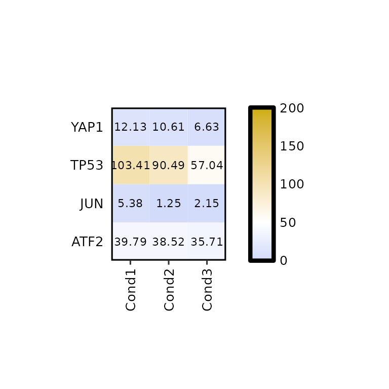
Customize plot
Write the values
By default, expressionHeatmap() writes the expression values in each cell. This function can be disabled by setting the write_label to FALSE.
expressionHeatmap(mean_tpm, genes = c("TP53", "JUN", "ATF2", "YAP1"), write_label = F)## Using Geneid as id variables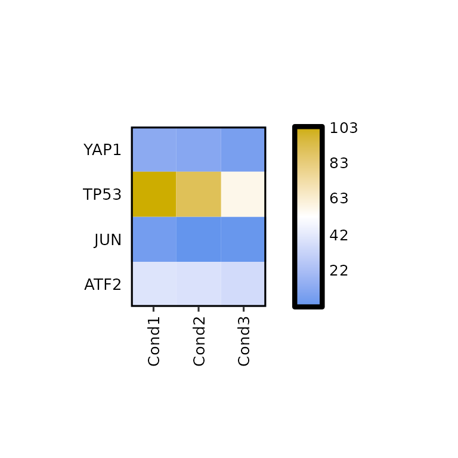
If what is needed is to change the size, or color of the written values, the arguments label_size and label_color should be changed to the desired value.
expressionHeatmap(mean_tpm, genes = c("TP53", "JUN", "ATF2", "YAP1"),
label_size = 2, label_color = "darkred")## Using Geneid as id variables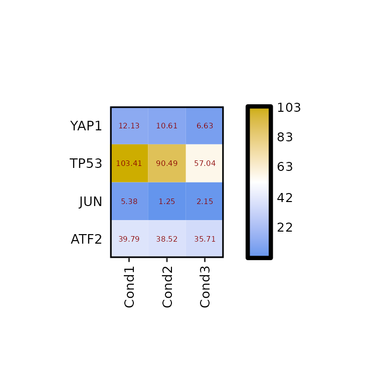
Furthermore, the number of decimals to round the expression values to can be changed using label_digits.
expressionHeatmap(mean_tpm, genes = c("TP53", "JUN", "ATF2", "YAP1"), label_digits = 0)## Using Geneid as id variablesHeatmap size
By default, the heatmap size is set to 10x10 mm for each cell. To change it, the arguments hm_height and hm_width must be set to the desired valuees in mm.
expressionHeatmap(mean_tpm, genes = c("TP53", "JUN", "ATF2", "YAP1"),
hm_height = 70, hm_width = 70)## Using Geneid as id variablesColors
To change the colors of the heatmap, the argument hm_colors will be used. This argument accepts a character vector with 3 colors: the first color will be the lower limit color, the second will be the midpoint color and the third will be the higher limit color.
expressionHeatmap(mean_tpm, genes = c("TP53", "JUN", "ATF2", "YAP1"),
hm_colors = c("blue", "gray", "red"))## Using Geneid as id variablesNote that if legend_midpoint value is the midpoint where the second color will be placed.
expressionHeatmap(mean_tpm, genes = c("TP53", "JUN", "ATF2", "YAP1"),
legend_scale = c(0,200), legend_midpoint = 40, legend_breaks_by = 40,
hm_colors = c("blue", "gray", "red"))## Using Geneid as id variablesTitle, subtitle and caption
expressionHeatmap(mean_tpm, genes = c("TP53", "JUN", "ATF2", "YAP1"),
title = "This is a title", subtitle = "This is a subtitle",
caption = "This is a caption")## Using Geneid as id variables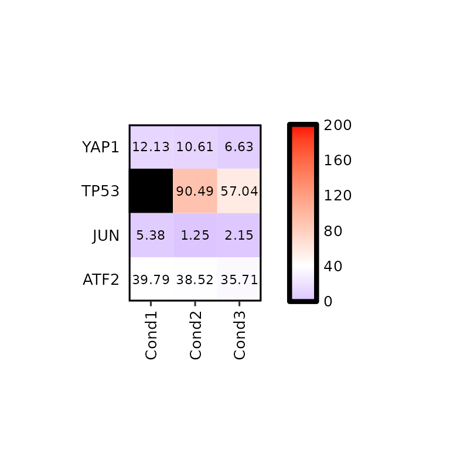
expressionHeatmap(mean_tpm, genes = c("TP53", "JUN", "ATF2", "YAP1"),
title = "This is a title", subtitle = "This is a subtitle",
caption = "This is a caption", title_hjust = .5)## Using Geneid as id variables
expressionHeatmap(mean_tpm, genes = c("TP53", "JUN", "ATF2", "YAP1"),
title = "This is a title", title_size = 20,
subtitle = "This is a subtitle", subtitle_size = 18,
caption = "This is a caption", caption_size = 15)## Using Geneid as id variablesAxis
Axis titles
expressionHeatmap(mean_tpm, genes = c("TP53", "JUN", "ATF2", "YAP1"),
xlab = "X axis title", ylab = "Y axis title")## Using Geneid as id variables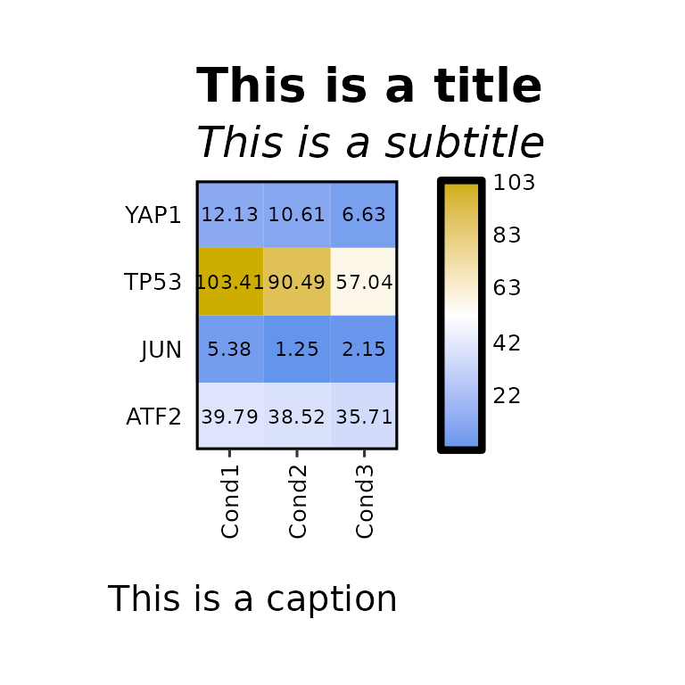
expressionHeatmap(mean_tpm, genes = c("TP53", "JUN", "ATF2", "YAP1"),
xlab = "X axis title", ylab = "Y axis title", axis_title_size = 17)## Using Geneid as id variables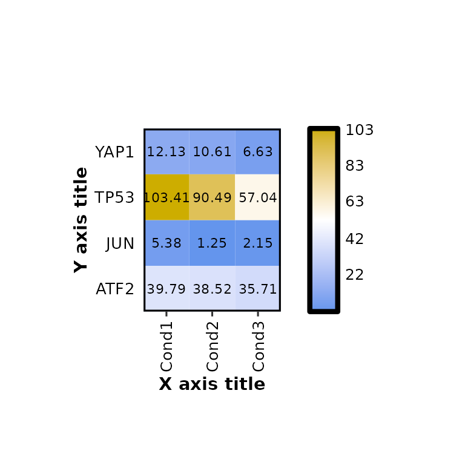
Axis text size
expressionHeatmap(mean_tpm, genes = c("TP53", "JUN", "ATF2", "YAP1"),
axis_text_size = 17)## Using Geneid as id variables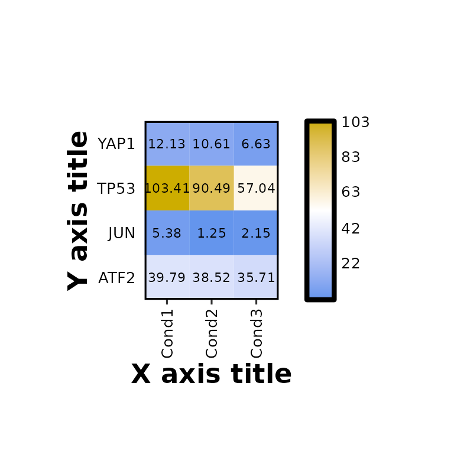
Legend
Legend height
By default, the legend height is set to the same height as the heatmap, but it can be changed using the argument legend_height.
expressionHeatmap(mean_tpm, genes = c("TP53", "JUN", "ATF2", "YAP1"),
legend_height = 20)## Using Geneid as id variables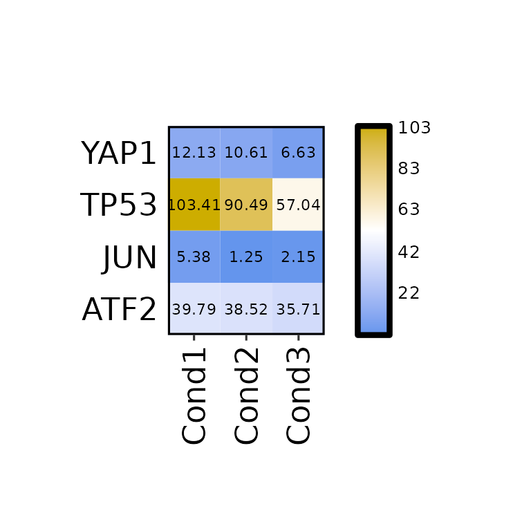
Legend title
expressionHeatmap(mean_tpm, genes = c("TP53", "JUN", "ATF2", "YAP1"),
legend_title = "Legend Title")## Using Geneid as id variables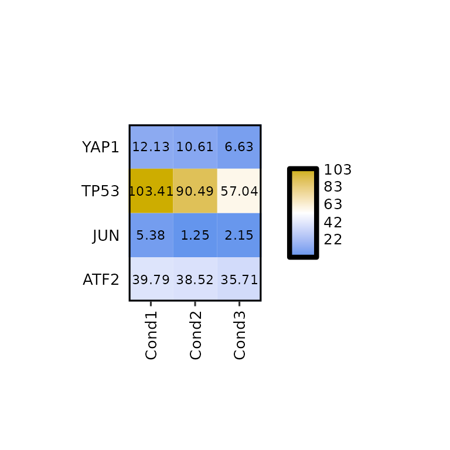
expressionHeatmap(mean_tpm, genes = c("TP53", "JUN", "ATF2", "YAP1"),
legend_title = "Legend Title", legend_title_size = 18)## Using Geneid as id variables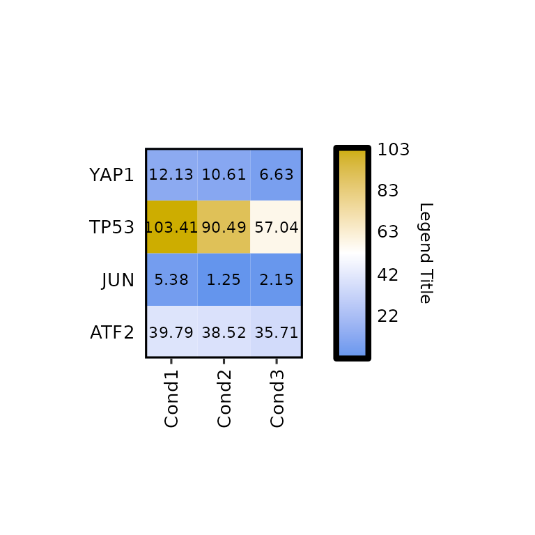
Further costumization
Since expressionHeatmap() outputs a ggplot2-based heatmap, it can be further customized like any other ggplot2-based plot.
If dendograms are plotted, the customization will be done as in the patchwork package.